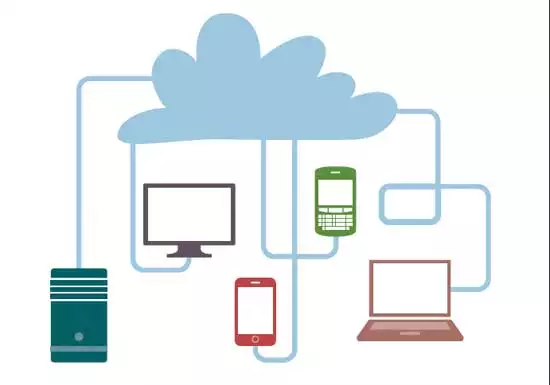

|  |
|---|
Das diversas tendências que surgem no mundo de TI, certamente a mais conhecida entre elas é a computação em nuvem,
que vem crescendo de forma significante nos últimos anos. A computação em nuvem (cloud computing em inglês) pode aos poucos
substituir a tecnologia como conhecemos hoje e revolucionar a forma como organizamos e gerenciamos uma empresa, sendo ela do
ramo tecnológico ou não.
O cloud computing (ou, em português, computação em nuvem) é a tecnologia que permite ao usuário o acesso direto a serviços online, sem precisar instalar nenhum programa em seu dispositivo físico. Isso é possível por meio da hospedagem em data centers, interligados pela internet, seguindo o princípio da computação em GRID, modelo computacional capaz de alcançar uma alta taxa de processamento dividindo as tarefas entre diversas máquinas. Os dados arquivados em rede podem ser acessados de maneira remota a qualquer hora e de qualquer lugar do mundo, bastando, para isso, ter um dispositivo com acesso à internet. Existem diversos serviços oferecidos por fornecedores de cloud computing, como armazenamento, bancos de dados, servidores, streaming, entre muitos outros. A distribuição desses serviços é feita por uma plataforma específica, e os preços são definidos de acordo com a utilização. Ou seja, o usuário paga apenas por aquilo que realmente for utilizar. Geralmente, o acesso aos dados hospedados na nuvem e a gestão dos serviços utilizados se dá por meio de um painel de controle ou dashboard. De utilização simples, os administradores podem solicitar recursos e gerenciar suas contas livremente.
A nuvem oferece acesso fácil a uma grande variedade de tecnologias para que você possa inovar mais rapidamente e criar praticamente tudo o que puder imaginar. Você pode gerar rapidamente recursos conforme a necessidade, de serviços de infraestrutura, como computação, armazenamento e bancos de dados até Internet das Coisas, machine learning, data lakes, análises de dados e muito mais.
Você pode implantar serviços de tecnologia em questão de minutos e passar da ideia à implementação com agilidade várias ordens de grandeza maior do que antes. Assim, você tem a liberdade de experimentar, testar novas ideias para diferenciar as experiências dos clientes e transformar a sua empresa.
Com a computação em nuvem, você não precisa provisionar recursos em excesso para absorver picos de atividades empresariais no futuro. Em vez disso, você provisiona a quantidade de recursos realmente necessária. Você pode aumentar ou diminuir instantaneamente a escala desses recursos para ajustar a capacidade de acordo com a evolução das necessidades empresariais.
A nuvem permite que você troque as despesas de capital (datacenters, servidores físicos etc.) por despesas variáveis e pague apenas pela TI consumida. Além disso, as despesas variáveis são muito menores do que as que você pagaria por conta própria devido às economias de escala.
Com a nuvem, você pode ampliar as atividades para novas regiões geográficas e implantar globalmente em minutos. Por exemplo, a AWS tem infraestrutura em todo o mundo, o que permite que você implante aplicativos em vários locais físicos com apenas alguns cliques. Aproximar os aplicativos dos usuários finais reduz a latência e melhora a experiência desses usuários.